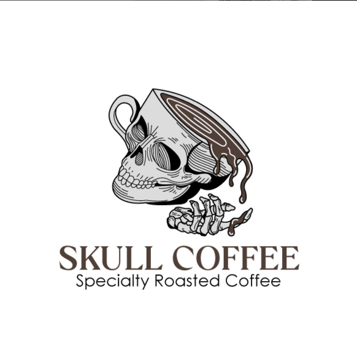

"¡El mejor cafe que puedes encontrar en el Norte de Nicaragua!"
Cafe arabico de especialidad.

Cultivado en las montañas mas altas de Esteli(A 1280 mts de altura).
Ver Nuestros Procesos
"¡El mejor cafe que puedes encontrar en el Norte de Nicaragua!"

"Su tostado medio y sus diferentes procesos dan una experiencia unica!"